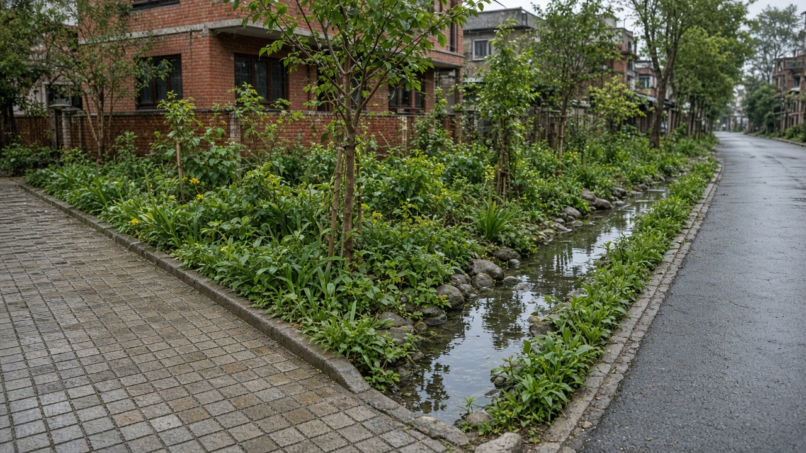
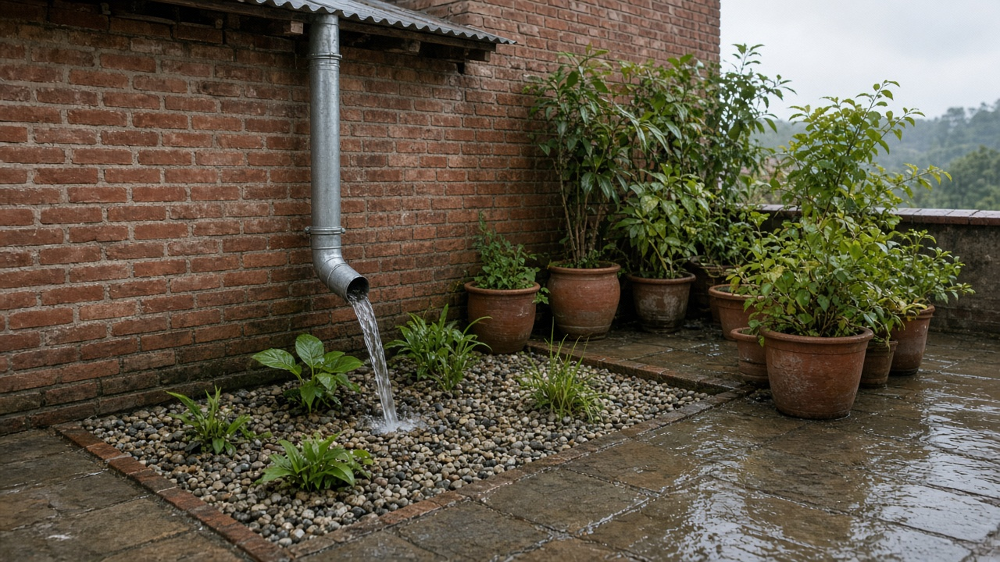
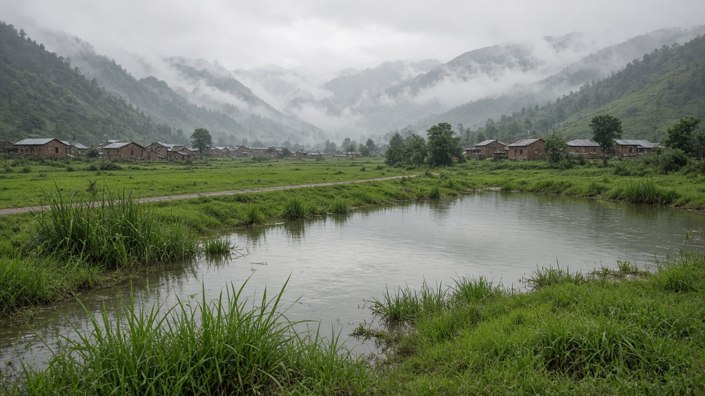

Stormwater Management and Sponge Cities
Published on August 20, 2026

Stormwater management decides whether monsoon rain becomes a resource or a flood. When roofs, roads, and compounds seal the soil, water races into drains and rivers, overflowing low neighbourhoods and cutting roads. Sponge-city design slows, stores, and infiltrates rainfall where it falls through rain gardens, permeable paving, detention basins, restored ponds, and river setbacks. Grey pipes remain necessary for extreme events, but they work better when the landscape has already shaved the peak. Kathmandu Valley’s buried streams and encroached floodplains show the cost of treating water as something to pipe away rather than space to hold.
Site-scale measures add up. Rooftop storage, disconnected downpipes, and courtyard soakaways reduce the load on street drains. Parking lots can sit on gravel cells instead of unbroken asphalt. Street profiles can include bioswales that also grow trees. Upstream forests and paddy terraces still act as sponges if peri-urban conversion leaves them intact. Maintenance is the usual failure: silted swales, dumped debris, and blocked inlets turn green infrastructure into mosquito pits unless crews and residents share a calendar. Design must match soil type—clay in parts of the valley infiltrates slowly, so storage volume matters as much as porous surfaces.
Municipal codes should require runoff limits on new buildings, protect remaining ponds and khols, and map flood paths before issuing permits on river edges. Early-warning for flash floods and clear rules against filling wetlands save more lives than post-disaster relief. Pokhara’s lake and feeder streams, Terai towns on flat alluvium, and hill bazaars in steep catchments need different mixes of storage and conveyance. Success is measured in fewer inundated ground floors, shorter road closures after storms, and rising groundwater in dry months—not only in kilometres of new concrete drain.

वर्षा पानी व्यवस्थापनले मनसुन पानी स्रोत बन्छ कि बाढी भन्ने तय गर्छ। छाना, सडक र कम्पाउन्डले माटो बन्द गर्दा पानी नाला र नदीमा दगुर्छ, तल्लो छिमेक डुबाउँछ र सडक काट्छ। स्पन्ज-शहर डिजाइनले वर्षा झरेकै ठाउँमा ढिलो पार्छ, भण्डारण गर्छ र छिराउँछ—वर्षा बगैंचा, छिद्रिल पिच, थिग्रिने पोखरी, पुनर्स्थापित ताल र नदी दूरीबाट। खैरो पाइप चरम घटनाका लागि आवश्यक रहन्छन् तर परिदृश्यले शिखर काटिसकेपछि राम्रो काम गर्छन्। काठमाडौं उपत्यकाका गाडिएका खोला र अतिक्रमित बाढी मैदानले पानी पाइपबाट पठाउने वस्तु होइन समात्ने ठाउँ हो भन्ने लागत देखाउँछन्।
स्थल स्तरका उपाय जोडिन्छन्। छाना भण्डारण, छुट्ट्याइएका पानी पाइप र आँगन सोस्ने खाल्डाले सडक नालाको भार घटाउँछन्। पार्किङ अटुट कालोपत्रेभन्दा गिट्टी कोषमा बस्न सक्छ। सडक प्रोफाइलमा रूख पनि हुर्काउने जैविक नाला राख्न सकिन्छ। माथिल्लो वन र धान गह्रा अझै स्पन्ज हुन् यदि उपनगरीय रूपान्तरणले तिनीहरू जोगाउँछ। मर्मत सामान्य असफलता हो: माटो भरिएका नाला, फालिएको फोहोर र थुनिएका मुखले हरित पूर्वाधारलाई लामखुट्टे खाल्डो बनाउँछन् जबसम्म टोली र बासिन्दाले पात्रो साझा गर्दैनन्। डिजाइन माटो प्रकारसँग मिल्नुपर्छ—उपत्यकाका केही भागको माटो बिस्तारै छिराउँछ, त्यसैले भण्डारण आयतन छिद्रिल सतह जत्तिकै महत्त्वपूर्ण छ।
नगर नियमावलीले नयाँ भवनमा बहाव सीमा राख्नुपर्छ, बाँकी पोखरी र खोला जोगाउनुपर्छ र नदी किनारा अनुमतिअघि बाढी बाटो नक्सा गर्नुपर्छ। झट्ट बाढीको पूर्वचेतावनी र सिमसार नभर्ने स्पष्ट नियमले विपद्पछिको राहतभन्दा बढी जीवन बचाउँछन्। पोखराको ताल र सहायक खोला, समतल जलोढ़ तराई सहर र अग्ला जलाधारका पहाडी बजारलाई भण्डारण र बहावको फरक मिश्रण चाहिन्छ। सफलता डुबेका तल्ला तला कमी, आँधीपछि छोटो सडक बन्द र सुख्खा महिनामा बढ्दो भूमिगत जलमा मापिन्छ—नयाँ कंक्रिट नालाको किलोमिटरमा मात्र होइन।

वर्षा जल प्रबंधन तय करता है कि मानसून पानी स्रोत बनेगा या बाढ़। छत, सड़क और परिसर मिट्टी बंद करें तो पानी नालों और नदियों में दौड़ता है, निचले मोहल्ले डुबोता है और सड़क काटता है। स्पंज-शहर डिज़ाइन वर्षा गिरते ही धीमी करता, जमा करता और सोखता है—वर्षा उद्यान, छिद्रिल फर्श, थिरकने वाले जलाशय, बहाल तालाब और नदी दूरी से। धूसर पाइप चरम घटनाओं के लिए आवश्यक रहते हैं पर परिदृश्य शिखर काट चुके बाद बेहतर काम करते हैं। काठमांडू घाटी की दबी नालियाँ और घिरी बाढ़ मैदान दिखाते हैं कि पानी पाइप से भेजने की वस्तु नहीं, थामने की जगह है।
स्थल स्तर के उपाय जुड़ते हैं। छत भंडारण, अलग नाली पाइप और आँगन सोख गड्ढे सड़क नालों का भार घटाते हैं। पार्किंग अटूट डामर के बजाय बजरी कोशों पर बैठ सकती है। सड़क प्रोफ़ाइल में पेड़ भी उगाने वाले जैविक नाले रखे जा सकते हैं। ऊपरी वन और धान की क्यारियाँ अभी भी स्पंज हैं यदि उपनगरीय रूपांतरण उन्हें बचाए। रखरखाव सामान्य विफलता है: मिट्टी भरे नाले, फेंका कचरा और थुने मुख हरित अवसंरचना को मच्छर गड्ढे बना देते हैं जब तक दल और निवासी पंचांग साझा न करें। डिज़ाइन मिट्टी प्रकार से मिलना चाहिए—घाटी के कुछ भाग की मिट्टी धीरे सोखती है, इसलिए भंडारण आयतन छिद्रिल सतह जितना ही महत्वपूर्ण है।
नगर नियमावली को नई इमारतों पर बहाव सीमा रखनी चाहिए, बचे तालाब और नाले बचाने चाहिए और नदी किनारे अनुमति से पहले बाढ़ पथ नक्शा करने चाहिए। अचानक बाढ़ की पूर्वचेतावनी और आर्द्रभूमि न भरने के स्पष्ट नियम आपदा बाद राहत से अधिक जीवन बचाते हैं। पोखरा का ताल और सहायक नाले, समतल जलोढ़ तराई नगर और ऊँचे जलग्रहण वाले पहाड़ी बाज़ारों को भंडारण और बहाव का अलग मिश्रण चाहिए। सफलता डूबी निचली मंज़िलों की कमी, तूफ़ान बाद छोटी सड़क बंद और शुष्क महीनों में बढ़ते भूजल में मापी जाती है—केवल नई कंक्रीट नाली के किलोमीटर में नहीं।